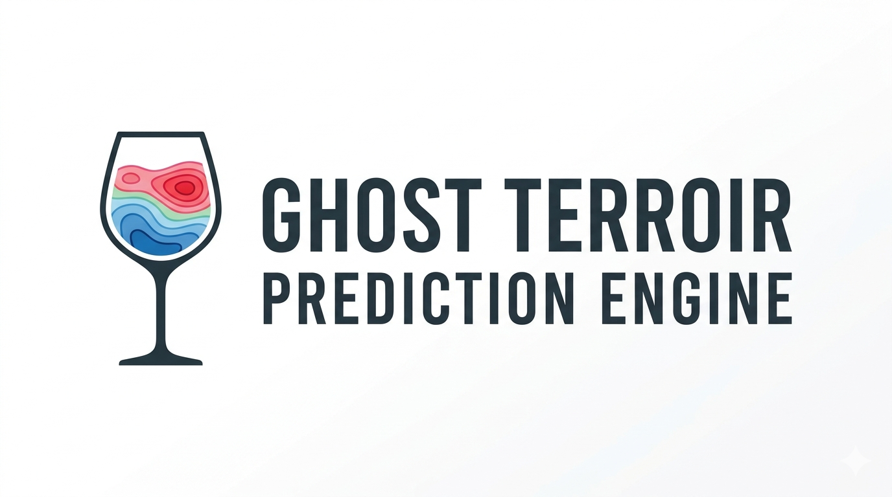
Terroir Prediction Engine
Details
Live GEE app finding the 2050 climate analogues of fourteen iconic wine vintages. Hybrid ERA5-Land / TerraClimate / MODIS / Sentinel-2 stack, with PCA + k-means clustering and SVR downscaling.
Project Manager · Space Systems Engineer · EO Specialist
Master of Space Studies candidate at ISU (CNES Scholarship), with ten years delivering industrial geosciences and digital-transformation projects. Building tools and missions for the European space sector — civil and dual-use.
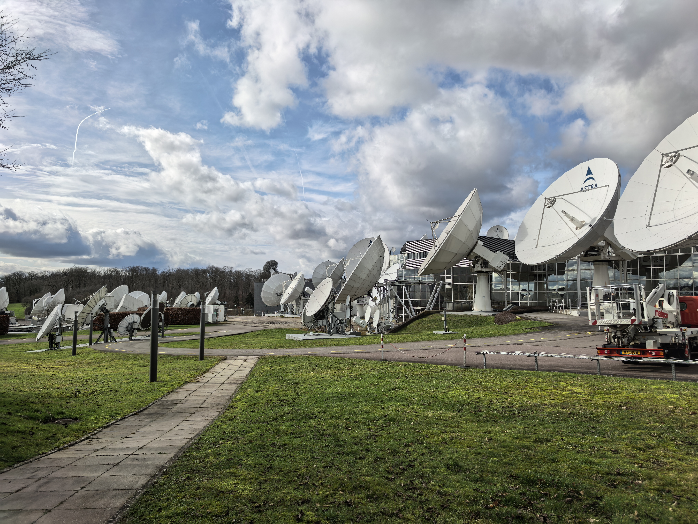
Two-week ISU Advanced Studies workshop: nine hardware tasks on the real station, three software re-implementations at escalating levels of abstraction (Flask + ESP32 prototype, C# mission control, GNU Radio SDR), capped by a live AO-73 telemetry pass.
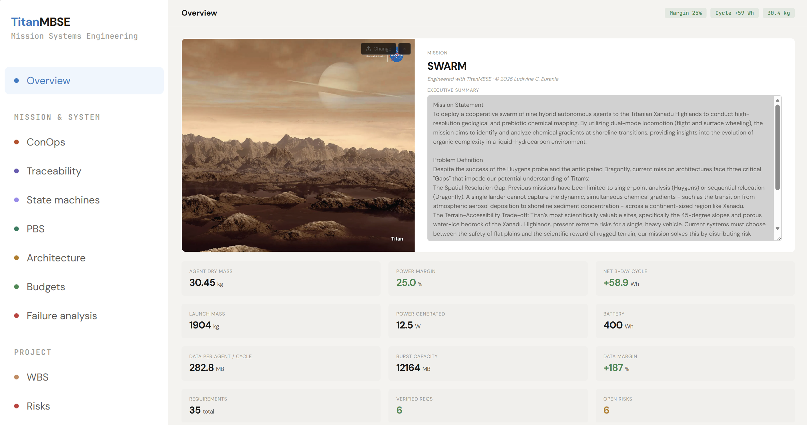
A browser-based, ECSS-aligned MBSE tool I built solo (~7,700 lines, single HTML), and the three-person team mission concept it powered: a fly-and-roll swarm exploring Titan's Xanadu Highlands.
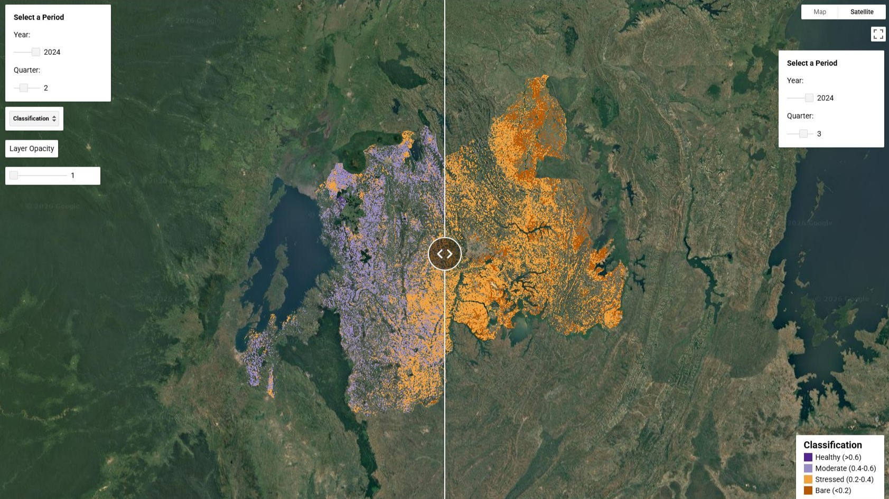
A team digital poster for ISU's AI in Space Poster Session: a Sentinel-2 + GEE prototype classifying Rwandan vegetation health, with a Pan-African GeoAI roadmap for food security.

Live GEE app finding the 2050 climate analogues of fourteen iconic wine vintages. Hybrid ERA5-Land / TerraClimate / MODIS / Sentinel-2 stack, with PCA + k-means clustering and SVR downscaling.
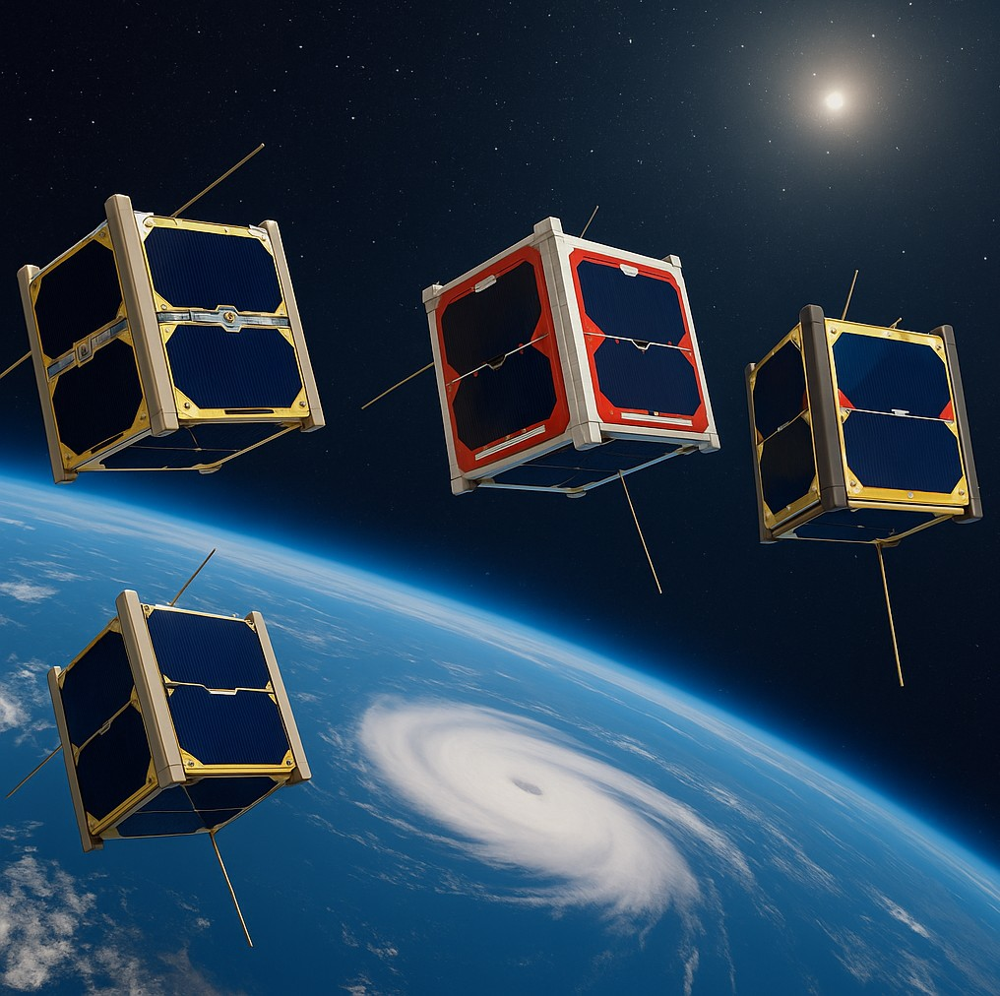
Hurricane cloud-monitoring CubeSat prototype. End-to-end integration: payload, OBC, COMMS, ADCS, EPS, ground station. V&V completed.
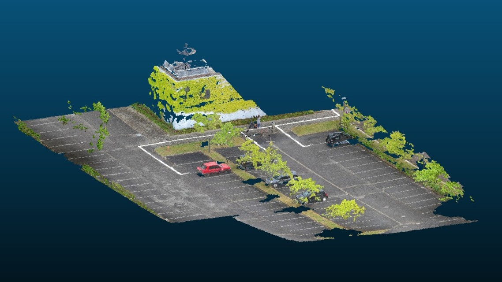
47 DJI Neo frames → 2 cm/px orthomosaic, three RGB vegetation indices, and a 4.5 M-point colored 3D reconstruction. Live 2D + 3D web viewer on GitHub Pages. Built with Codex against a custom AGENTS.md scaffold.
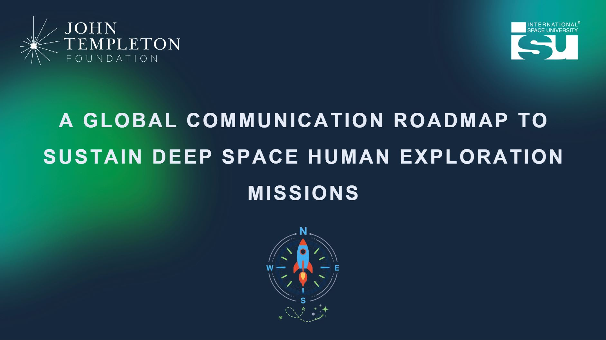
JTF-sponsored, 20-person ISU team project. A 15-year, 3-phase, 91-strategy framework to sustain global public engagement in deep space human exploration. I served as Report Head. Accepted for IAC 2026.

A federal governance framework and €15 billion annual roadmap to consolidate fragmented European space assets into a unified command structure. Workshop strategy proposal.
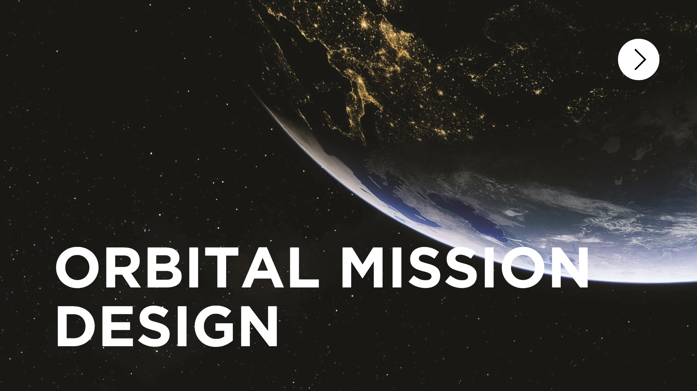
Four mission-analysis exercises in STK: foundational workshop, sun-synchronous CubeSat orbit selection, Earth-analogue access for the Titan swarm, and ocean-coverage AOCS for a concurrent-engineering altimetry mission. STK Level 1 certified.
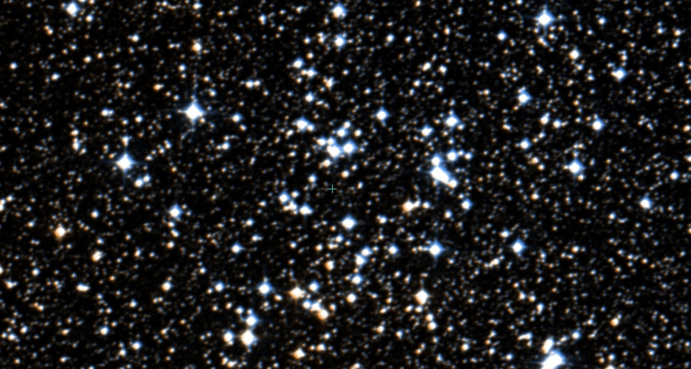
Curating an open-cluster membership from Gaia DR3: 10,989 cone-search sources to 212 clean members, validated against literature.
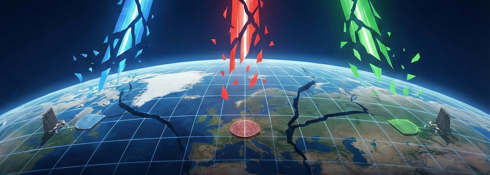
A 4,000-word individual report arguing that incompatible national success metrics — not technology readiness — are the real bottleneck for Space-Based Solar Power.

300+ geophysical studies, VSP processing, reservoir characterisation, hydraulic fracture monitoring. $15K – $1M revenue per project. Field and remote acquisition leadership.
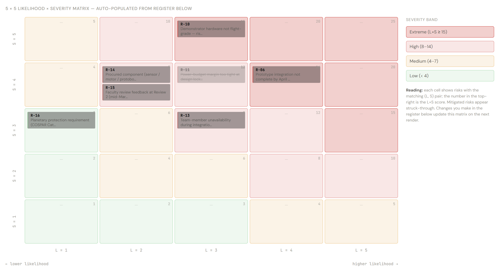
Multi-phase information system migration across Europe; +50% data integrity. 10+ projects, cross-functional teams, ESA-equivalent governance and review.
An ESA internship is confirmed for August 2026 – January 2027. After that I am looking for roles in EO data processing, systems engineering, programme management, and dual-use / military space — at agencies, primes, or downstream operators across Europe. Happy to discuss research collaboration or earlier engagement.